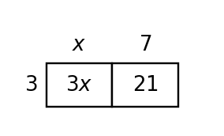

Mathematical idea: Equivalent expressions can look different while producing the same value for every input.
Today you will identify parts of expressions, combine like terms, use area and grouping models, and test equivalence. You will explain what each form reveals about the same situation.
Learning Target: Students will interpret and rewrite algebraic expressions by identifying structure, meaning, and equivalent forms.
I can statements
This is a long-range preview for future lessons. Do not solve it today. Instead, annotate it individually. Circle anything familiar, underline symbols or directions that seem important, and write notes about what information you think will be needed later.
As you annotate, ask yourself: What parts (words, symbols, graphs) do you KNOW? What parts look FAMILIAR? What parts look like jibberish?
Create a real context that can be represented by both $8x+20$ and $4(2x+5)$. Then explain what each form reveals about the situation and give one input-output check that confirms equivalence.
Directions
Read the introduction aloud with a partner or in a small group. As you read, annotate the text by highlighting important ideas, circling key vocabulary, and writing short notes about connections, questions, or predictions in the margins.
An algebraic expression is built from numbers, variables, operations, and grouping symbols. A coefficient tells how many copies of a variable term are being used, while a constant does not change with the variable.
Structure means the way an expression is organized. In $4(2x+5)$, the factor 4 shows four equal groups. In $8x+20$, the total has been distributed into separate terms.
Like terms have the same variable part. Terms such as $2x$, $5x$, and $-x$ can be combined because they all contain one $x$. Terms such as $x$ and $x^2$ cannot be combined.
Equivalent expressions have the same value for every input. You can use properties, area models, or substitution checks to decide whether two expressions are equivalent.
Contexts make expression structure meaningful. One form might show groups, another might show a total cost, and both can be useful depending on the question.
Stop and Discuss
Expression vocabulary helps you describe structure precisely.
| Expression | Coefficient | Variable term | Constant |
|---|---|---|---|
| $5x+12$ | 5 | $5x$ | 12 |
| $3(2x+4)$ | structure shows groups | $2x$ inside each group | 4 inside each group |
Context: In $5x+12$, $5x$ could mean 5 dollars per item and 12 could mean a fixed fee.
In the expression $7x+18$, identify the coefficient of $x$, the variable term, and the constant.
In the expression $9x+4$, identify the coefficient of $x$, the variable term, and the constant.
Stop and Discuss
Like terms have the same variable part. Combine their coefficients and keep the variable part.
$$2x+3x+10+x+4x^2+3=4x^2+6x+13$$| Term type | Terms | Combined result |
|---|---|---|
| $x^2$ terms | $4x^2$ | $4x^2$ |
| $x$ terms | $2x+3x+x$ | $6x$ |
| constants | $10+3$ | $13$ |
Context: Combining like terms keeps the total value but makes the expression easier to read.
Simplify by combining like terms: $3x+5+2x^2+4x+9+x^2$.
Simplify by combining like terms: $4x+7+3x^2+2x+5+x^2$.
Stop and Discuss
The distributive property rewrites a product as a sum of partial products.
$$3(x+7)=3x+21$$
Context: Three identical packs each containing $x$ items and 7 extra items can be counted as $3x+21$ total items.
Use the distributive property to rewrite $5(2x+3)$.
Use the distributive property to rewrite $6(x+4)$.
Stop and Discuss
A substitution check tests whether two expressions give the same value for a chosen input. One input can find a mismatch, but matching for one input alone does not prove equivalence.
| $x$ | $4(2x+5)$ | $8x+20$ | Match? |
|---|---|---|---|
| 0 | 20 | 20 | yes |
| 3 | 44 | 44 | yes |
Context: Both forms can model four groups with $2x+5$ in each group.
Two students are checking whether $3(4x+2)$ and $12x+5$ are equivalent.
Student claim: "They are equivalent because both have $12x$."
Two students are checking whether $2(5x+4)$ and $10x+6$ are equivalent.
Student claim: "They are equivalent because both have $10x$."
Stop and Discuss
Expressions are built from terms, coefficients, constants, variables, operations, and grouping. Structure tells how the expression is organized.
Equivalent expressions have the same value for every input, even if the forms look different. Rewriting can reveal groups, totals, or useful pieces of a context.
A common error is combining terms that are not like terms or distributing to only one term inside parentheses.
Strong understanding means you can rewrite expressions, explain what each form shows, and test equivalence using structure or substitution.
Look back at the future task. Do not solve it yet. Highlight one part that makes more sense now than it did at the beginning. Circle one part that still feels unfamiliar. Write one sentence about what representation you would look at first.
In $5x+12$, identify the coefficient of $x$.
Simplify by combining like terms: $2x+3x+3+4x^2+10+x$.
What is one idea about algebraic expressions and equivalent forms you understand better now than at the start of class? Write at least one complete sentence.
What is one thing about algebraic expressions and equivalent forms you still want to understand or practice? Be specific — name the idea, not just "everything."